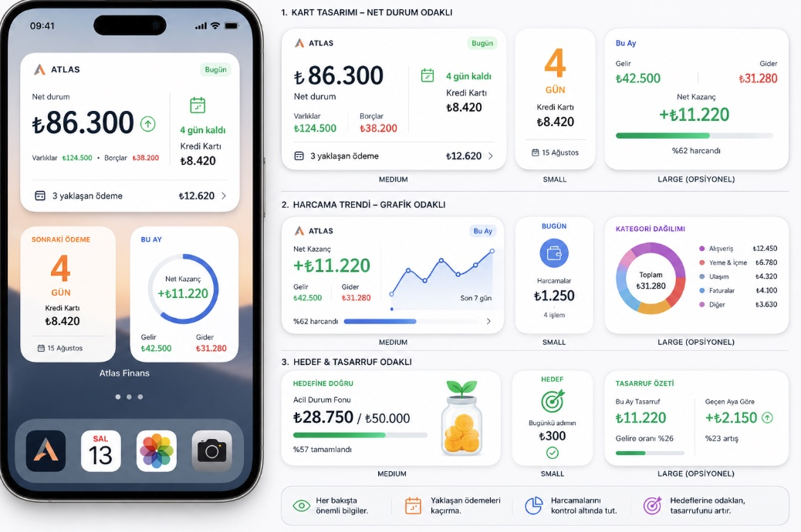
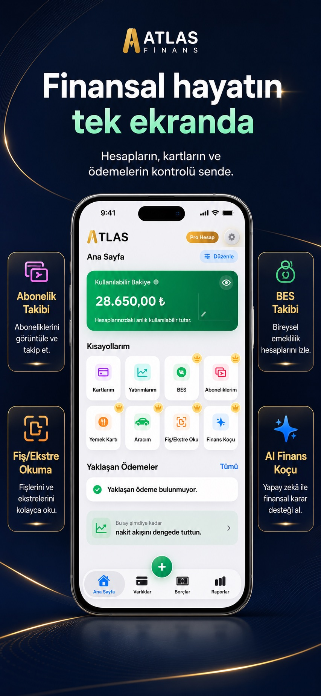
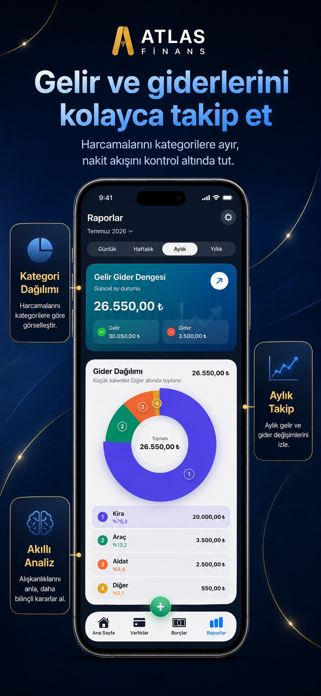
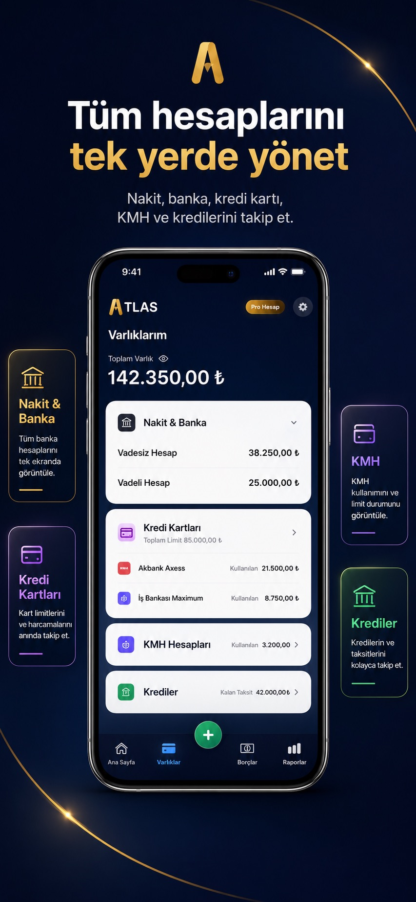
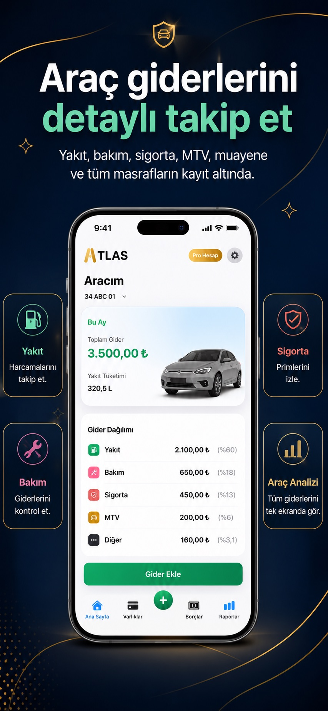
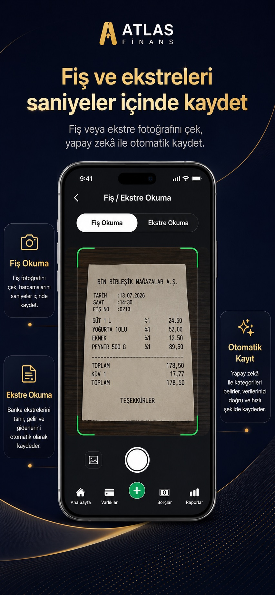
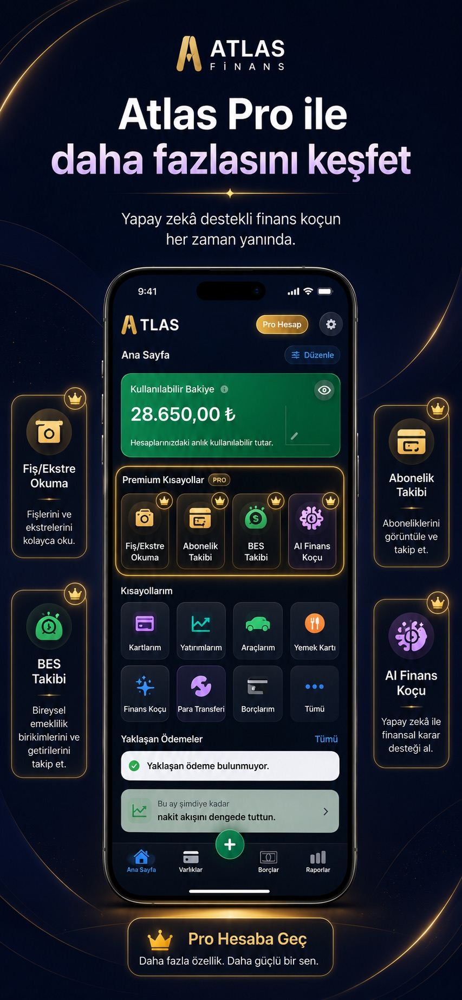

Bütçe ve nakit akışı
Gelir, gider, kategoriler, bütçeler ve yaklaşan ödemeler tek görünümde.
Finansal yükünü hafiflet
Bütçeni, borçlarını, kredilerini, aboneliklerini, yatırımlarını ve hedeflerini tek yerde yönet. Hesap açmadan, banka bağlantısı kurmadan.
Şimdi indirApp Store
Bilgi, bir bakış uzağında
Net durum, yaklaşan ödemeler, aylık denge, harcama trendi ve hedef ilerlemesini uygulamayı açmadan takip et.
Uygulamadan ekranlar






Tek uygulama, bütün tablo
Gelir, gider, kategoriler, bütçeler ve yaklaşan ödemeler tek görünümde.
Kredi kartı, kredi, KMH, taksit, kişisel borç ve aboneliklerini düzenli takip et.
Yatırım, BES, ev, araç ve tasarruf hedeflerinle net durumunu gör.
Fiş, fatura, ekstre ve kredi belgelerinden bilgileri cihaz üzerinde çıkar; kaydetmeden önce doğrula.
Trendleri, kategori dağılımını ve yaklaşan tarihleri anlaşılır özetlerle takip et.
Finansal kayıtların cihazında kalır; PIN, Face ID veya cihaz parolasıyla erişimini koruyabilirsin.
Gizlilik temelimiz